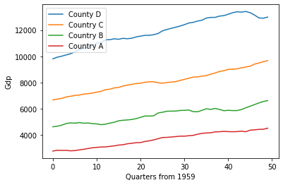

Distances
In this notebook, we will use sktime for time series distance computation
Preliminaries
[1]:
import matplotlib.pyplot as plt
import numpy as np
from sktime.datasets import load_macroeconomic
from sktime.distances import distance
Distances
The goal of a distance computation is to measure the similarity between the time series ‘x’ and ‘y’. A distance function should take x and y as parameters and return a float that is the computed distance between x and y. The value returned should be 0.0 when the time series are the exact same, and a value greater than 0.0 that is a measure of distance between them, when they are different.
Take the following two time series:
[2]:
X = load_macroeconomic()
country_d, country_c, country_b, country_a = np.split(X["realgdp"].to_numpy()[3:], 4)
plt.plot(country_a, label="County D")
plt.plot(country_b, label="Country C")
plt.plot(country_c, label="Country B")
plt.plot(country_d, label="Country A")
plt.xlabel("Quarters from 1959")
plt.ylabel("Gdp")
plt.legend()
[2]:
<matplotlib.legend.Legend at 0x7ffa8b8beaf0>

The above shows a made up scenario comparing the gdp growth of four countries (country A, B, C and D) by quarter from 1959. If our task is to determine how different country C is from our other countries one way to do this is to measure the distance between each country.
How to use the distance module to perform tasks such as these, will now be outlined.
Distance module
To begin using the distance module we need at least two time series, x and y and they must be numpy arrays. We’ve established the various time series we’ll be using for this example above as country_a, country_b, country_c and country_d. To compute the distance between x and y we can use a euclidean distance as shown:
[3]:
# Simple euclidean distance
distance(country_a, country_b, metric="euclidean")
[3]:
27014.721294922445
Shown above taking the distance between country_a and country_b, returns a singular float that represents their similarity (distance). We can do the same again but compare country_d to country_a:
[4]:
distance(country_a, country_d, metric="euclidean")
[4]:
58340.14674572803
Now we can compare the result of the distance computation and we find that country_a is closer to country_b than country_d (27014.7 < 58340.1).
We can further confirm this result by looking at the graph above and see the green line (country_b) is closer to the red line (country_a) than the orange line (country d).
Different metric parameters
Above we used the metric “euclidean”. While euclidean distance is appropriate for simple example such as the one above, it has been shown to be inadequate when we have larger and more complex timeseries (particularly multivariate). While the merits of each different distance won’t be described here (see documentation for descriptions of each), a large number of specialised time series distances have been implement to get a better accuracy in distance computation. These are: ‘euclidean’, ‘squared’, ‘dtw’, ‘ddtw’, ‘wdtw’, ‘wddtw’, ‘lcss’, ‘edr’, ‘erp’
All of the above can be used as a metric parameter. This will now be demonstrated:
[5]:
print("Euclidean distance: ", distance(country_a, country_d, metric="euclidean"))
print("Squared euclidean distance: ", distance(country_a, country_d, metric="squared"))
print("Dynamic time warping distance: ", distance(country_a, country_d, metric="dtw"))
print(
"Derivative dynamic time warping distance: ",
distance(country_a, country_d, metric="ddtw"),
)
print(
"Weighted dynamic time warping distance: ",
distance(country_a, country_d, metric="wdtw"),
)
print(
"Weighted derivative dynamic time warping distance: ",
distance(country_a, country_d, metric="wddtw"),
)
print(
"Longest common subsequence distance: ",
distance(country_a, country_d, metric="lcss"),
)
print(
"Edit distance for real sequences distance: ",
distance(country_a, country_d, metric="edr"),
)
print(
"Edit distance for real penalty distance: ",
distance(country_a, country_d, metric="erp"),
)
Euclidean distance: 58340.14674572803
Squared euclidean distance: 3403572722.3130813
Dynamic time warping distance: 3403572722.3130813
Derivative dynamic time warping distance: 175072.58701887555
Weighted dynamic time warping distance: 1701786361.1565406
Weighted derivative dynamic time warping distance: 87536.29350943778
Longest common subsequence distance: 1.0
Edit distance for real sequences distance: 1.0
Edit distance for real penalty distance: 411654.25899999996
While many of the above use euclidean distance at their core, they change how it is used to account for various problems we encounter with time series data such as: alignment, phase, shape, dimensions etc. As mentioned for specific details on how to best use each distance and what it does see the documentation for that distance.
Custom parameters for distances
In addition each distance has a different set of parameters. How these are passed to the ‘distance’ function will now be outlined using the ‘dtw’ example. As stated for specific parameters for each distance please refer to the documentation. Dtw is a O(n^2) algorithm and as such a point of focus has been trying to optimise the algorithm. A proposal to improve performance is to restrict the potential alignment path by putting a ‘bound’ on values to consider when looking for an alignment. While there have been many bounding algorithms proposed the two most popular are Sakoe-Chiba bounding or Itakuras parallelogram bounding. How these two work will briefly be outlined using the LowerBounding class:
[6]:
from sktime.distances import LowerBounding
x = np.zeros((6, 6))
y = np.zeros((6, 6)) # Create dummy data to show the matrix
LowerBounding.NO_BOUNDING.create_bounding_matrix(x, y)
[6]:
array([[0., 0., 0., 0., 0., 0.],
[0., 0., 0., 0., 0., 0.],
[0., 0., 0., 0., 0., 0.],
[0., 0., 0., 0., 0., 0.],
[0., 0., 0., 0., 0., 0.],
[0., 0., 0., 0., 0., 0.]])
Above shows a matrix that maps each index in ‘x’ to each index in ‘y’. Dtw without bounding will consider all of these indexes (indexes in bound we define as finite values (0.0)). However, we can change the indexes that are considered using Sakoe-Chibas bounding like so:
[7]:
LowerBounding.SAKOE_CHIBA.create_bounding_matrix(x, y, sakoe_chiba_window_radius=0.5)
[7]:
array([[ 0., 0., 0., 0., inf, inf],
[ 0., 0., 0., 0., 0., inf],
[ 0., 0., 0., 0., 0., 0.],
[ 0., 0., 0., 0., 0., 0.],
[inf, 0., 0., 0., 0., 0.],
[inf, inf, 0., 0., 0., 0.]])
The matrix that is produced follows the same concept as no bounding where each index between x and y are assigned a value. If the value is finite (0.0) it is considered inbound and infinite out of bounds. Using Sakoe-Chiba bounding matrix with a window radius of 1 we can see we get a diagonal from 0,0 to 5,5 where values inside the window are 0.0 and values outside are infinite. This reduces the compute time of dtw as we are considering 12 less potential indexes (12 values are infinite). As mentioned there are other bounding techniques that use different ‘shapes’ over the matrix such a Itakuras parallelogram which as the name implies produces a parallelogram shape over the matrix.
[8]:
LowerBounding.ITAKURA_PARALLELOGRAM.create_bounding_matrix(x, y, itakura_max_slope=0.3)
[8]:
array([[ 0., 0., inf, inf, inf, inf],
[inf, 0., 0., 0., inf, inf],
[inf, 0., 0., 0., inf, inf],
[inf, inf, 0., 0., 0., inf],
[inf, inf, 0., 0., 0., inf],
[inf, inf, 0., 0., 0., 0.]])
With that base introductory to bounding algorithms and why we may want to use them how do we use it in our distance computation. There are two ways:
[11]:
# Create two random unaligned time series to better illustrate the difference
rng = np.random.RandomState(42)
n_timestamps, n_features = 10, 19
x = rng.randn(n_timestamps, n_features)
y = rng.randn(n_timestamps, n_features)
# First we can specify the bounding matrix to use either via enum or int (see
# documentation for potential values):
print(
"Dynamic time warping distance with Sakoe-Chiba: ",
distance(x, y, metric="dtw", lower_bounding=LowerBounding.SAKOE_CHIBA, window=1.0),
) # Sakoe chiba
print(
"Dynamic time warping distance with Itakura parallelogram: ",
distance(x, y, metric="dtw", lower_bounding=2, itakura_max_slope=0.2),
) # Itakura parallelogram using int to specify
print(
"Dynamic time warping distance with Sakoe-Chiba: ",
distance(x, y, metric="dtw", lower_bounding=LowerBounding.NO_BOUNDING),
) # No bounding
Dynamic time warping distance with Sakoe-Chiba: 364.7412646456549
Dynamic time warping distance with Itakura parallelogram: 389.3428989579974
Dynamic time warping distance with Sakoe-Chiba: 364.7412646456549
[ ]:
Generated using nbsphinx. The Jupyter notebook can be found here.